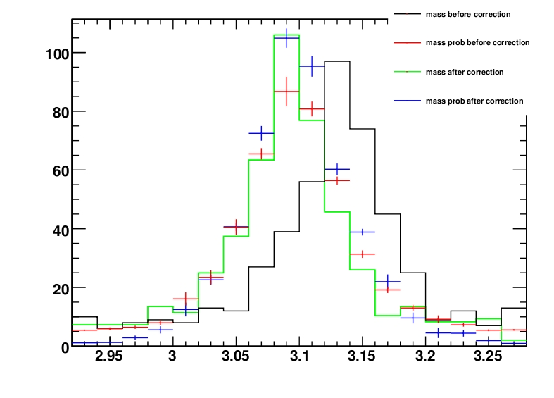
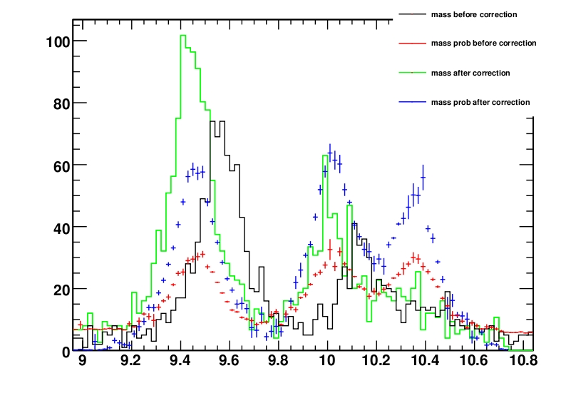
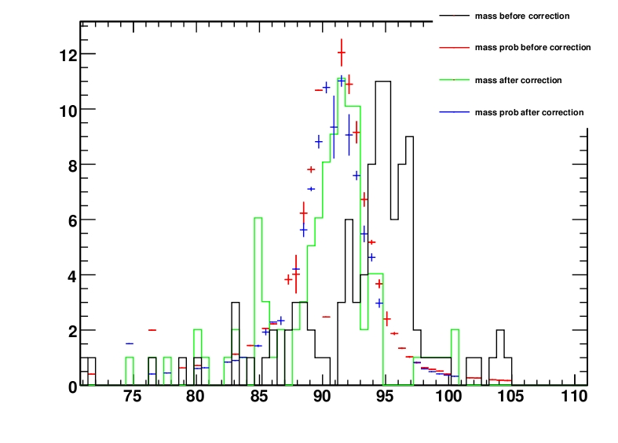
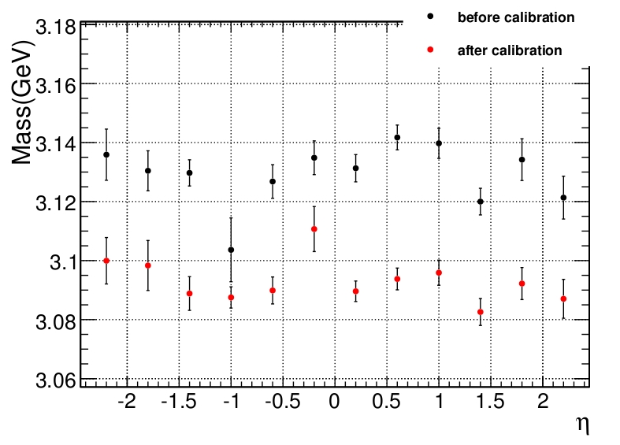
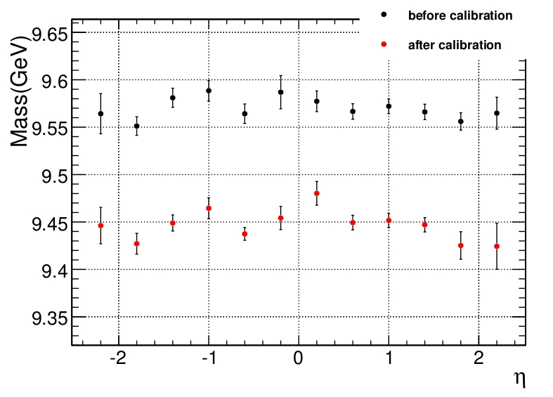
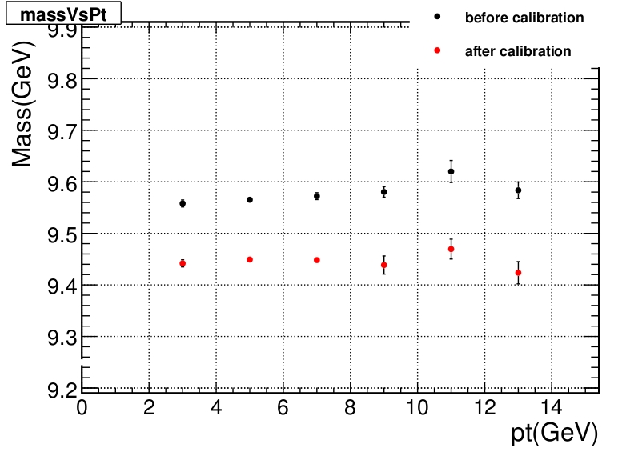
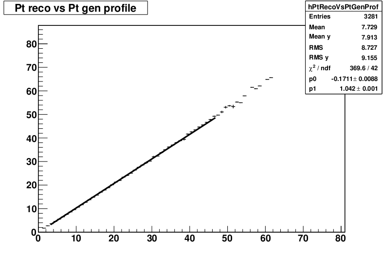
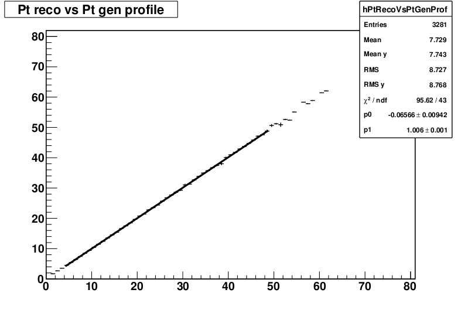
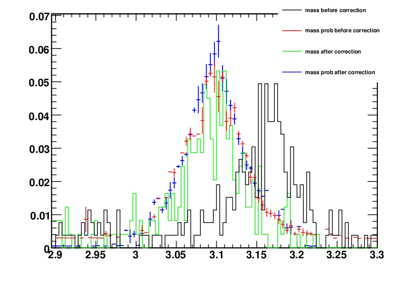
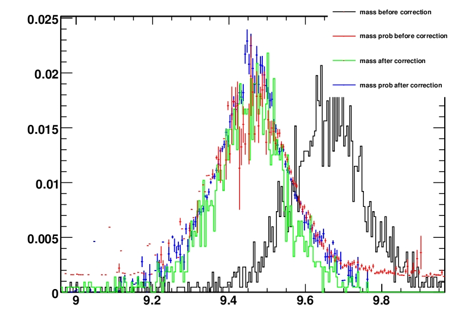

Momentum Scale Calibration
Improved background model
Described in:
ImprovedBackgroundModel.pdf
The scripts and macros to do this are in MuonAnalysis/MomentumScaleCalibration/test/Macros/BackgroundFunctionProducer.
An Instructions.txt file explaines how to use them.
J/Psi model - 9/6/2010
Described in: JPsiModel.pdf
Relative cross sections fit - 17/3/2010
Described in: RelativeCrossSectionsFit.pdf
Resolution function - 14/8/2009
Described in: Resolutions.pdf
Basic tests of the algorithm - 11/8/2009
Described in: BasicTests.pdf
First complete test 0.1/pb - 13/8/2009
The first complete test using all available resonances with events correspoding to 0.1/pb of integrated luminosity. The samples used are the same as before (rescaled) and the InclusivePPmuX which also has J/Psi but not Psi(2S). Again background and scale fit are performed in this order. The first time I used the same bias as in the previous tests with neutral initial parameters for the scale fit. The bias is so big that the peaks of the Upsilons are shifted so that the Upsilon1S ends close to the Upsilon2S mass value and so on. Without background this is not a problem, but with background the likelihood can use background events for the Upsilon(1S) peak and so it does not find very favorable to shift back the peaks to the correct position (it finds a secondary minimum). This problem is corrected by giving better initial values (those from the previous test). This is a rather extreme case, since we do expect biases much, much smaller than that even at startup, nevertheless it is fine to see that the fit is solid, provided the initial conditions are sound.
The next test used initial bias with Pt = (1.005 + 0.001*Pt)*Pt. The results are shown here.
The results of the background fit:
{kind=link}
The results of the scale fit on the various resonances:
  {kind=link}
{kind=link}
{kind=link}
JPsi mass vs Eta of the muons and results of the fits (before(left) after(right)):
{kind=link}
{kind=link}
{kind=link}
Mass vs Eta and Pt for the Upsilon1S:
 {kind=link}
{kind=link}
Reconstructed vs generated Pt of the muons before (left) and after (right) the fit. The one before the fit does not match exactly with the bias, but the fit is only linear while the bias was parabolic and there are biases already in the reconstruction. The final fit shows that the Pt agrees much better with the generated one, especially considering the low statistic available and the fact that we did not perform any resolution fit.
 {kind=link}
{kind=link}
Background Fits with new BackgroundHandler - 11/8/2009
Introduced a new BackgroundHandler class to handle the background. The mass spectrum is divided in three regions:
- - Region 0 includes the Z
- - Region 1 includes Upsilon 1S, 2S and 3S
- - Region 2 includes J/Psi and Psi 2S
- - When the background is fitted the regions are used, parameters for the functions are determined and the fraction of background events.
- - When the background is not fitted the background fractions are rescaled to the resonance windows so that they provide an estimate for the scale and resolution fits.
Tested the new BackgroundHandler class applying a bias on the muon pt scale and performing a background fit followed by a scale fit on a sample of 53317 InclusivePPmuX events (those include also prompt J/Psi, but not Psi2S) and 3131 Upsilon 1S. The Upsilon 1S correspond to approximately 0.3/pb, while the InclusivePPmuX to about 0.09/pb. The results of the background fits are shown in the following figure.
{kind=link}
After the background fit we perform a scale fit to recover the bias we introduced. The results are shown in the next figure.


The background fit gave an estimate of the fraction good enough to allow the scale fit to correct the bias.
The results are shown in the next two figures:
The normalizations for the reconstructed mass and probability for the Upsilons are different because presently all the pdf are normalized to unity
and have a weight = 1. It is possible to set relative weights consistent with the cross sections, but it is not yet done. It is expected to be a
minor correction, influencing mostly the superposition regions betweent the Upsilons and J/Psi and Psi 2S.
Multiple resonance fits with 1/pb - 11/8/2009
Test the capacity to fit multiple resonances with a statistic of 1/pb. I use:
Of course the uncertainty on the cross sections gives a big error on the expected number of events. I list in the table the exact number of events used in this test, computed as xSection*filtersEfficiencies*IntegratedLuminosity.
Resonance
events in 1/pb
Z
1184
Upsilon 1S
10873
Upsilon 2S
5147
Upsilon 3S
1477
{kind=link}
{kind=link}
{kind=link}
{kind=link}